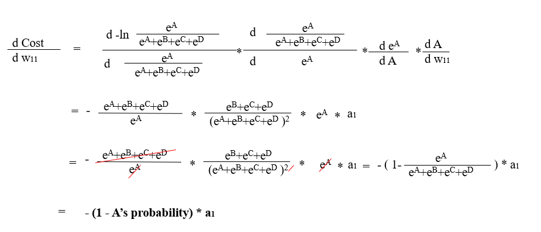
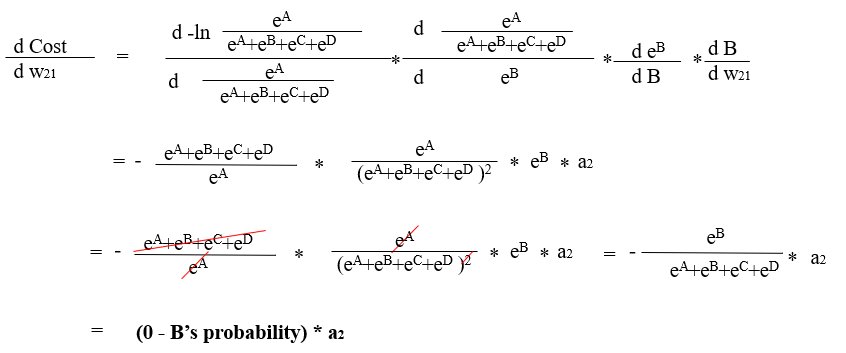

Yeji Park
Character Recognition
(using Artificial Neural Network)
Click to run demo
Github repository0. Problem description
According to given picture which contains one written number among 0 to 9, It will recognize the number from the picture.
Ex) The picture below is the size of 28*28, has 784 pixels. Each pixel contains information of location and the brightness.
By combining these two information, the picture is determined what number it is. Forwawrd and back propagation are used when the model is made.
Ex) The picture below is the size of 28*28, has 784 pixels. Each pixel contains information of location and the brightness.
By combining these two information, the picture is determined what number it is. Forwawrd and back propagation are used when the model is made.

Forward propagation

Forward propagation is inferring the value using a model created based on input values and answer.
Each node in the neral network is called perceptron. Input perceptrons affect perceptrons in the next layer, and this perceptrons in the next layer affects perceptrons in its next layer.
 Each perceptrons in the input layer are used to make perceptron in the next layer. The values of each perceptron are multiplied by weights and is summed up to make perceptrons in the next layer.
Each perceptrons in the input layer are used to make perceptron in the next layer. The values of each perceptron are multiplied by weights and is summed up to make perceptrons in the next layer. The result of summation then becomes the input of activation function such as sigmoid, ReLu, and softmax(only at the last layer, in classification problems).
Creating the right model is largely related to finding right weights. Input values are given, therefore by changing weights, proper model can be made.
Evaluating errors is different based on the type of problems. Usually, Regression uses sigmoid function to evaluate erros, and Classification uses reLu and sigmoid function. Since we are dealing with the classification problem, we will look how to back propagate ANN that uses ReLu and Softmax function.
Then, How can we find proper weights? It can be done by evaluating errors of a current model, and changing its weights based on errors. Back propagation can conduct this action. However, We cannot find proper weights at one go. The initial weights are randomized and then it slowly changes over time.
In the classification problems, the last output is driven by using cross-entropy and softmax function.
 Let's assume that we have 4 classes(A,B,C,D), and each outcome is 9, 5, 3, 5 respectively (The outcome is something like a1*w1 + a2*w2 + bias)
Let's assume that we have 4 classes(A,B,C,D), and each outcome is 9, 5, 3, 5 respectively (The outcome is something like a1*w1 + a2*w2 + bias)
We can simply put this as a probability, (Roughly rounded)
A : 9/(9+5+3+5) = 0.4
B : 5/(9+5+3+5) = 0.23
C : 3/(9+5+3+5) = 0.14
D : 5(9+5+3+5) = 0.23
However, Instead of this, we use Euler's number to present the probability for each class.
(The reason for using Euler's number is closely related to the back propagation(makes easier to differentiate), and the cross entropy error function.)
Now, (e9 + e5 + e3 + e5) is the denominator for each class, and the numerator is e9 , e5 , e3 , e5 for each class.
A : e9/(e9 + e5 + e3 + e5) = 0.96
B : e5/(e9 + e5 + e3 + e5)= 0.017
C : e3/(e9 + e5 + e3 + e5) = 0.0023
D : e5/(e9 + e5 + e3 + e5) = 0.017
y= ex is a monotone increasing function, so It does not change the magnitude of the relation. (At the end of the day, our purpose is just to pick up the class with the highest probability)
However, the problem lies when the number gets too big. we need to modify this number. A:9 B:5 C:3 D:5 .
First, find the biggiest number which is 9(A) and then subtract 9 for all classes.
A: 0 B:-4 C:-6 D:-4
A : e0/(e0 + e-4 + e-6 + e-4) = 0.96
B : e-4/(e0 + e-4 + e-6 + e-4) = 0.017
C : e-6/(e0 + e-4 + e-6 + e-4) = 0.0023
D : e-4/(e0 + e-4 + e-6 + e-4) = 0.017
(The probability is still the same.)
Conclusion outcome -- softmax function --> probability
We first need to know how much the error this model has. To measure this error, Crossentropy function is often used (in classification problems.)
After using softmax function, we could convert each number into possibility of the each class. Now, let's assume that, this picture belongs to class A. Our model was pretty close, as the final outcome was 0.96 for class A. However, if the picture belongs to class B, then the model is significantly wrong because the possibility of belonging in class B is only 0.017.
The error is calculated by multiplying two numbers, - ln(The possility of beloning in each class) * Correct answer, and summing up. if the estimation is close enough , then it will get lower costs. if it is not close, then the loss will be high.
Let's assume that we have 4 classes(A,B,C,D), and each outcome is 9, 5, 3, 5 respectively (The outcome is something like a1*w1 + a2*w2 + bias)We can simply put this as a probability, (Roughly rounded)
A : 9/(9+5+3+5) = 0.4
B : 5/(9+5+3+5) = 0.23
C : 3/(9+5+3+5) = 0.14
D : 5(9+5+3+5) = 0.23
However, Instead of this, we use Euler's number to present the probability for each class.
(The reason for using Euler's number is closely related to the back propagation(makes easier to differentiate), and the cross entropy error function.)
Now, (e9 + e5 + e3 + e5) is the denominator for each class, and the numerator is e9 , e5 , e3 , e5 for each class.
A : e9/(e9 + e5 + e3 + e5) = 0.96
B : e5/(e9 + e5 + e3 + e5)= 0.017
C : e3/(e9 + e5 + e3 + e5) = 0.0023
D : e5/(e9 + e5 + e3 + e5) = 0.017
y= ex is a monotone increasing function, so It does not change the magnitude of the relation. (At the end of the day, our purpose is just to pick up the class with the highest probability)
However, the problem lies when the number gets too big. we need to modify this number. A:9 B:5 C:3 D:5 .
First, find the biggiest number which is 9(A) and then subtract 9 for all classes.
A: 0 B:-4 C:-6 D:-4
A : e0/(e0 + e-4 + e-6 + e-4) = 0.96
B : e-4/(e0 + e-4 + e-6 + e-4) = 0.017
C : e-6/(e0 + e-4 + e-6 + e-4) = 0.0023
D : e-4/(e0 + e-4 + e-6 + e-4) = 0.017
(The probability is still the same.)
Conclusion outcome -- softmax function --> probability
We first need to know how much the error this model has. To measure this error, Crossentropy function is often used (in classification problems.)
After using softmax function, we could convert each number into possibility of the each class. Now, let's assume that, this picture belongs to class A. Our model was pretty close, as the final outcome was 0.96 for class A. However, if the picture belongs to class B, then the model is significantly wrong because the possibility of belonging in class B is only 0.017.
The error is calculated by multiplying two numbers, - ln(The possility of beloning in each class) * Correct answer, and summing up. if the estimation is close enough , then it will get lower costs. if it is not close, then the loss will be high.


If x is close to 0, then the cost will be close to infinity. if it is close to 1, then the cost will be 0.
let's assume correct answer is (A,B,C,D)= (1,0,0,0) Then, cost for A = 1*(-ln(0.96+0.002)) = 1*(0.0406)= 0.0406 . so the cost is very low. cost for B,C,D = 0*(-ln(...))= 0 (So, In cross entropy error, we only care about how close the correct answer is with estimation, don't care about how correct(wrong) is for BCD.)) If, the probability of A was not 0.96 but 0, then ? Cost for A = 1*(-ln(0+0.002)) = 1*(6.2146)= 6.2146 . so the cost is very high compared to previous one. also, this is reason why we should add small numbers like 0.002, because -ln0 is infinite.

(Click more to read) When the last output was from the sigmoid function
How do we know how much errors we have in this model?
If we simply add the errors?
0.2+0.1+0.2+(-0.9)+(0.05)+0.25+0+0.05+0.05+0 = 0.5 +(-0.9) +0.3 = -0.01
the errors is only -0.01. It is becuase some nodes have different sign, so they cancel out each other's errors.
To avoid this, Squaring each errors and then add.
 0.22+0.12+0.22+(-0.9)2+(0.05)2+0.252+02+0.052+0.052+0 2= 1.01
0.22+0.12+0.22+(-0.9)2+(0.05)2+0.252+02+0.052+0.052+0 2= 1.01
The evaluation function we will use here is 1/2(correct answer-estimated answer)2 (1/2)*1.01 = 0.505 error for this case
How do we know how much errors we have in this model?
If we simply add the errors?
0.2+0.1+0.2+(-0.9)+(0.05)+0.25+0+0.05+0.05+0 = 0.5 +(-0.9) +0.3 = -0.01
the errors is only -0.01. It is becuase some nodes have different sign, so they cancel out each other's errors.
To avoid this, Squaring each errors and then add.
0.22+0.12+0.22+(-0.9)2+(0.05)2+0.252+02+0.052+0.052+0 2= 1.01
The evaluation function we will use here is 1/2(correct answer-estimated answer)2 (1/2)*1.01 = 0.505 error for this case
Back-propagation
 Back-propagation is the process of neural network finding right weights.Depending on how much each node contributes to the total error.
we will focus on 1. How much error each node contributes 2. How much weight should be updated
Back-propagation is the process of neural network finding right weights.Depending on how much each node contributes to the total error.
we will focus on 1. How much error each node contributes 2. How much weight should be updated
Back-propagation starts from the nodes from the output layer. These nodes can be evaluated by seeing how different it is from the right answer

Even we do not explicitly see w11 from the equation above, cost function contains w11, as the A contains w11.

Therefore, we can differentiate the cost function with respective to w11(Weights).
The equation below is showing the differentiation of the cost function. It also means the moment slope, and derivitives.

purpose is to minimize 'y' value, since y stands for the costs(total errors of all nodes)
If the value of moment slope is positive, then when w11 goes to positive side, cost increases. If the value of moment slope is negative, then when w11 goes to positive side, cost decreases. The former case, w11 should go to negative side and the later case, w11 should go to positive side to decrease overall cost.
Now, Let's elaborate on how to update weights. let's assume specific situation. There are 4 classes as output, and let's name it class 1, 2,3 and 4 from the top to the bottom.
The picture belongs to class 1, so the correct answer for each class is 1,0,0,0 respectivley. we can simplify it as the eqation below, since only one is multplied by 1 , and others by 0.

First, we will update w11. To update w11, we first need to calculate the derivities. It can be done by following the chain rule.


-(1- A's probability)*a1 is the result of d(cost)/d(w11). If the derivitive(moment slope) is positive value, then we need to go to the opposite the direction of the value of derivities to reduce the cost, and if it is negative value, also we need to go to the opposite direction of the value of deritivies. Either way, it needs to head the opposite direction of the value of derivities. so,w11 +(1- A's probability)*a1. It is not compelete formula, because we need to multiply appropriate small number called alpha(0.001 ,0.1...) to prevent to miss or skip the point we want to find. w11 -alpha*((A's probability-1)*a1).
Now, let's update w21.It is similar but different since the cost function contains w21 only at the denominator. (It is different wiht updating w11, since the cost function contains w11 at the numerator and also at the denominator). So differentiation result is different.


(B's probability-0)*a2 is the result of d(cost)/d(w21). So, the weight update would be w21 +alpha*(B's probability*a2).
By these two cases, we can generalize the way of updating weights.
weight - alpha*(probability- correct answer)*the previous output
we can think (probability- correct answer) as a error of the output node. Now, to change the weights of the parevious layer, we need to know the error of the previous layer's node. Caculation is simple, the right picture below .


This is a basic pattern of machine learning. There are some more contents such as how to initialize good weights,(Xavier, He), regularization, and dropout. this contents will be updated in the future.